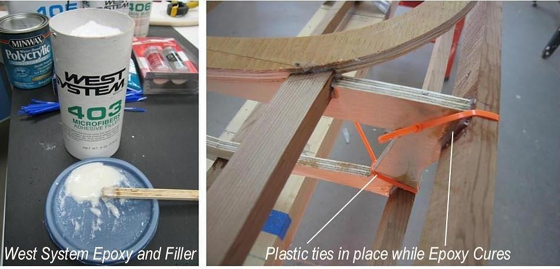

| Gluing Stringers (Plastic ties) | Menu Previous Page Next Page |
|

Plastic ties are an alternative to screwing the cross sections to the stringers while the epoxy cures. Both the Sea Rider (shown) and Nikumi were done this way. In addition, Epoxy Resin is an alternative to T-88 Epoxy glue. Allow West System Epoxy a minumum of 12 hrs curing time before proceeding to the next step.
|
|